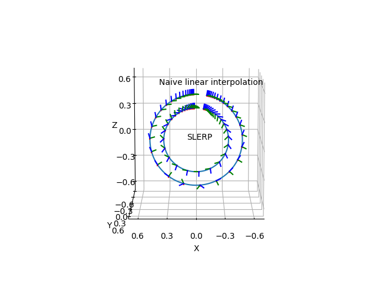

Note
Go to the end to download the full example code.
Quaternion SLERP¶
For small rotations, linear interpolation of quaternions gives almost the same results as spherical linear interpolation (SLERP). For larger angles there are significant differences as you can see in this example. The outer circle uses linear interpolation and the inner circle uses SLERP. You can play around with the value of ‘end_angle’ in this example.
import numpy as np
import matplotlib.pyplot as plt
from pytransform3d.rotations import (
matrix_from_axis_angle, quaternion_from_matrix, quaternion_slerp)
from pytransform3d.trajectories import plot_trajectory
T = np.linspace(0, 1, 1001)
sigmoid = 0.5 * (np.tanh(1.5 * np.pi * (T - 0.5)) + 1.0)
radius = 0.5
start_angle = np.deg2rad(0.0)
end_angle = np.deg2rad(350.0)
R1 = matrix_from_axis_angle([0, 0, 1, 0.5 * np.pi])
R2_start = matrix_from_axis_angle([1, 0, 0, start_angle])
R2_end = matrix_from_axis_angle([1, 0, 0, end_angle])
q_start = quaternion_from_matrix(R1.dot(R2_start))
q_end = quaternion_from_matrix(R1.dot(R2_end))
Y = np.zeros((len(T), 7))
Y[:, 0] = radius * np.cos(np.deg2rad(90) - end_angle * sigmoid)
Y[:, 2] = radius * np.sin(np.deg2rad(90) - end_angle * sigmoid)
if end_angle > np.pi:
q_end *= -1.0
Y[:, 3:] = (1.0 - T)[:, np.newaxis] * q_start + T[:, np.newaxis] * q_end
Y_slerp = np.zeros((len(T), 7))
Y_slerp[:, 0] = 0.7 * radius * np.cos(np.deg2rad(90) - end_angle * sigmoid)
Y_slerp[:, 2] = 0.7 * radius * np.sin(np.deg2rad(90) - end_angle * sigmoid)
for i, t in enumerate(T):
Y_slerp[i, 3:] = quaternion_slerp(q_start, q_end, t)
ax = plot_trajectory(
P=Y[:, :7], show_direction=False, n_frames=40, s=0.05, ax_s=0.7)
ax = plot_trajectory(
P=Y_slerp[:, :7], show_direction=False, n_frames=40, s=0.05, ax=ax)
ax.text(0.1, 0, 0, "SLERP")
ax.text(0.4, 0, 0.6, "Naive linear interpolation")
ax.view_init(elev=10, azim=90)
plt.show()
Total running time of the script: (0 minutes 0.167 seconds)